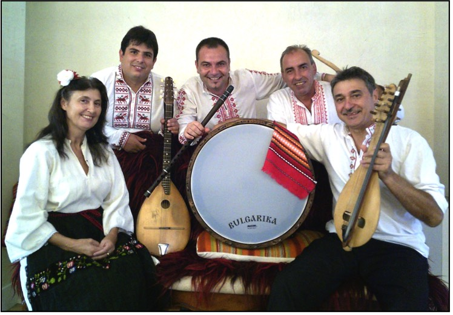

Brooklyn Heights International Folkdancers
Folk Dancers who love both the old and the new!
This summer we are continuing to dance
indoors in the air conditioned basement of
Zion Evangelical Lutheran Church, 125 Henry St., Brooklyn Heights
Mark your calendars for our first celebrity guest evening this fall:
Bulgarika Band - live music - Sept. 14th - 7 p.m.
